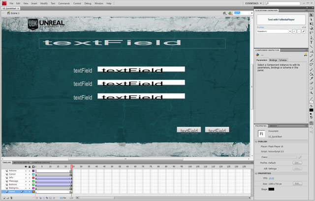
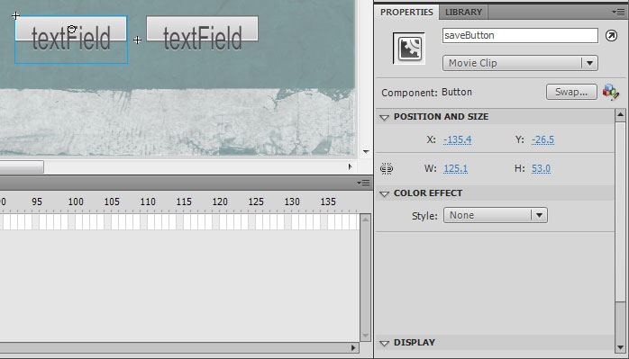
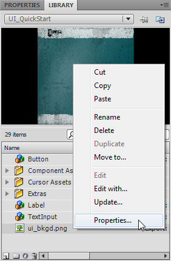
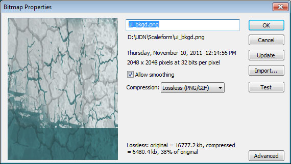
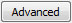
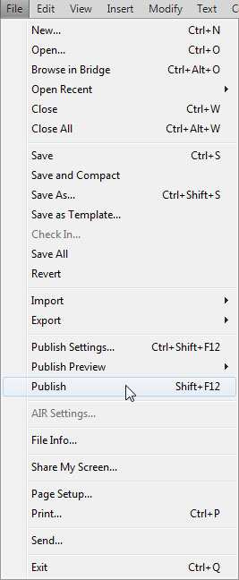
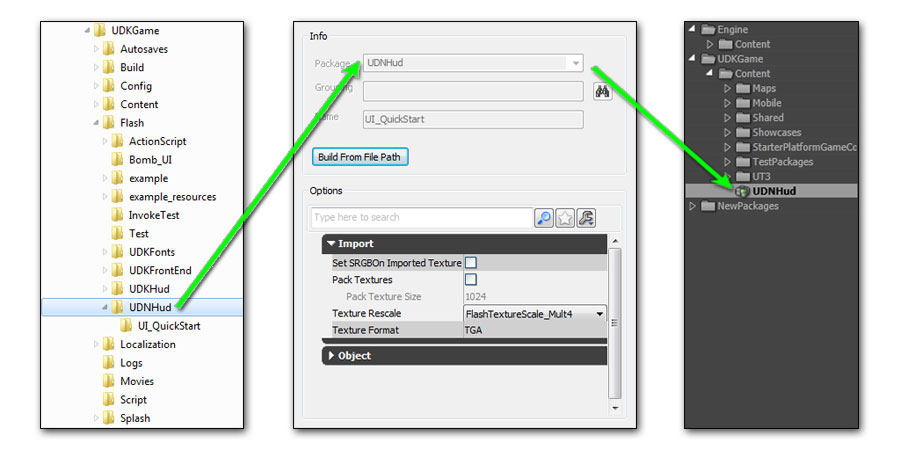
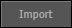
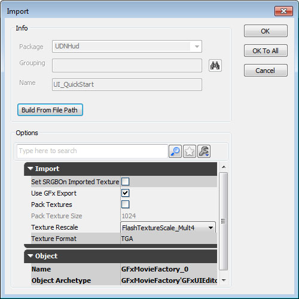
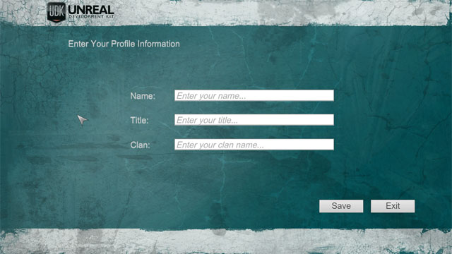

UDN
Search public documentation:
ScaleformQuickStartCH
English Translation
日本語訳
한국어
Interested in the Unreal Engine?
Visit the Unreal Technology site.
Looking for jobs and company info?
Check out the Epic games site.
Questions about support via UDN?
Contact the UDN Staff
日本語訳
한국어
Interested in the Unreal Engine?
Visit the Unreal Technology site.
Looking for jobs and company info?
Check out the Epic games site.
Questions about support via UDN?
Contact the UDN Staff
Scaleform GFx速成
概述

设置页面
| 样本文件 |
|---|
| UI_QuickStart - Part 1 |
| UI_QuickStart - Part 2 |
| UI_QuickStart - Part 3 |
| UI_QuickStart - Part 4 |
| UI_QuickStart AS3 version (part 1 of 2) |
| UI_QuickStart AS3 version (part 2 of 2) |

动画 除了背景图片外，每个元素也都有动画，即当菜单开启时，这些元素会从屏幕外进入。显然，这并不十分必要，只是举个例子展示一下动画是如何处理的。 实例名 需要特别注意的是，任何一个您想在UnrealScript(Unreal 引擎脚本)中访问的对象必须设置唯一的*InstanceName(实例名)* 。这就在页面中辨别元素的方法，它并且这还能使您获得那些对象的引用。在这个范例中，每个元素都要设置 实例名 ，虽然我们以后并不需要访问所有的元素。最明显的就是和文本输入组建相配套的三个标签。对我们来说，没有必要访问这些静态标签。但是如果您正在本地化菜单中的文本，您的确需要访问这些元素。
enableInitCallback(启用Init回调) 要使UnrealScript(Unreal脚本)通知一个CLIK控件，则必须启用Flash中CLIK控件上的 enableInitCallback(启用Init回调) 属性。任何您需要在UnrealScript中访问的控件都应启用该属性，这样控件就能得到WidgetInitialzed(控件初始化) 的回调。该属性默认启用，但不对任何不需要UnrealScript(Unreal脚本)识别的对象启用。 指针 在Scaleform界面中显示指针非常简单 添加一个视频短片到使用指针图形的页面，然后再添加一些新的ActionScript(动作脚本)到该页面，这个动作脚本规定视频短片的指针指到鼠标每次更新的位置。 通过将指针图形导入到图层中并将其转换为MovieClip标记来创建该指针视频短片。然后把它放进一个叫 Cursor(指针) 的层，这个层在 Action(动作) 层的下面，但在其他所有层之上。 添加ActionScript(动作脚本)：- 选中视频短片指针，然后点击 F9 打开Actionscript(动作脚本)编辑器
- 添加以下代码：
onClipEvent(enterFrame) { _X = _root._xmouse; _y = _root._ymouse; }
- 选中 Library(库) 面板中的图片并在图片上右击，选中 Properties(属性) 。

- 在 Bitmap properties(位图) 对话框中，选中 Allow Smoothing(允许平滑) 并把 Compression(压缩) 选项设置为 Lossless (PNG/GIF) (无损性(PNG/GIF)

- 点击

显示高级属性。 - 在 Linkage (链接) 选项中，勾选 Export for ActionScript(为动作脚本导出) ，然后在 Identifier(标识符) 区域中把文件名后的扩展名从图片的文件名中删除 (包括周期)等。

- 点击 图标保存修改。
- 最后，原始图片文件应该存放在同SWF文件名一样的文件夹中(同SWF文件路径相同)。

导入页面

发布过的.swf文件应放在[GameName]\Flash 路径所在文件夹,该文件夹名是您的目标swf文件导入Unreal引擎中的包的名字。该文件夹同即将导入.swf的包直接关联，并且在导入阶段不能修改。您可以有选择性地在包内设置子文件夹以体现出分组情况。

要确保已经发布的.swf文件最终能保存正确的路径，最简单的方法就是在最初就在目标路径保存Flash文件(.fla)。这样发布的文件就会默认按照该路径保存。 页面发布后，您就能通过 UnrealEd(Unreal编辑器)?中的Content Browser(内容浏览器)把它导入到虚幻引擎中，或使用 GFXIMPORT commandlet(GFX导入命令行开关 来执行该操作。按照该范例来执行，导入内容浏览器的步骤就完成了。- 打开虚幻编辑器，找到内容浏览器，然后点击

按钮。 - 在显示为 SWF Movie (*.swf)*的文件浏览器上修改文件类型筛选并找到您已发布的.swf文件路径
- 选中该文件并点击
 按钮。
按钮。
- 在 Import(导入) 对话框中，在 Package(包) 、 Group(组) 和 Name(名称) 区域都已填好内容，这些地方都是灰的，不能修改。

在这里使用默认设置就行。点击 按钮导入页面。 - 一旦导入步骤完成，SWF和它包含的任何图片都将会在内容浏览器中显示。

绑定页面
movie(视频) 属性关联一个swf文件，并能从该界面接受事件，向界面传递命令，也能在相关界面中访问界面元素。
如果您是新手，请阅读Custom UnrealScript Projects获取如何添加新的UnrealScript（Unreal脚本)项目的信息。
基本步骤如下：
- 视频播放器开启视频 -
Start() - 视频播放器已经初始化 -
Advance()- 为所有启用*enableInitCallback* (启用Init回调)属性的元素调用WidgetInitialized 函数。
- 保存引用到所需控件- 任何在页面中我们所要访问的对象必须有一个保存过的引用。
- 为在按钮上的点击事件应用代理-使用了Widget bindings(控件绑定)，以便传递给按钮的WidgetInitialized 的控件是GFxCLICKWidget类型，这种类型的控件可以添加事件监听器。
- 当点击按钮时调用代理。
- 保存按钮-使用玩家输入的信息改变消息
- 退出按钮-关闭界面
class UIScene_Profile extends GFxMoviePlayer; /** 对用于将消息显示在 UI 上的标签的引用 */ var GFxObject MessageLabel; /** 对用于输入玩家名称的文本字段的引用 */ var GFxObject PlayerText; /** 对用于输入玩家头衔的文本字段的引用 */ var GFxObject TitleText; /** 对用于输入玩家家族的文本字段的引用 */ var GFxObject ClanText; /** 对用于保存玩家资料信息的按钮的引用 - 因为我们希望得到 GFxCLIKWidget，所以必须添加一个窗体控件绑定 */ var GFxCLIKWidget SaveButton; /** 对用于关闭 UI 的按钮的引用 - 因为我们希望得到 GFxCLIKWidget，所以必须添加一个窗体控件绑定 */ var GFxCLIKWidget ExitButton; // 在打开 UI 开始视频播放时会调用 function bool Start(optional bool StartPaused = false) { // 开始播放视频 Super.Start(); // 初始化视频中的所有对象 Advance(0); return true; } // 启用 enableInitCallback 后会为视频中的每个对象自动调用回调函数 event bool WidgetInitialized(name WidgetName, name WidgetPath, GFxObject Widget) { // 确定进行初始化的窗体控件，并相应地对它进行处理 switch(Widgetname) { case 'messageLabel': // 保存对可以向玩家显示消息的标签的引用 MessageLabel = Widget; break; case 'playerText': // 保存对玩家名称的文本字段的引用 PlayerText = Widget; break; case 'titleText': // 保存对玩家头衔的文本字段的引用 TitleText = Widget; break; case 'clanText': // 保存对玩家家族的文本字段的引用 ClanText = Widget; break; case 'saveButton': // 保存对可以保存玩家资料信息的按钮的引用 // 将 Widget 转换为 GFxCLIKWidget 允许进行事件监听 - 请参阅 WidgetBindings SaveButton = GFxCLIKWidget(Widget); // 在点击这个按钮的时候添加代理 SaveButton.AddEventListener('CLIK_click', SavePlayerData); break; case 'exitButton': // 保存对可以关闭 UI 的按钮的引用 // 将 Widget 转换为 GFxCLIKWidget 允许进行事件监听 - 请参阅 WidgetBindings ExitButton = GFxCLIKWidget(Widget); // 在点击这个按钮的时候添加代理 ExitButton.AddEventListener('CLIK_click', CloseMovie); break; default: // 如果不是我们要找的窗体控件，那么继续传递 return Super.WidgetInitialized(Widgetname, WidgetPath, Widget); } return false; } // 添加通过使用输入的数据更改消息的代理 //在一个真实的游戏情境中，数据将被保存在某处 function SavePlayerData(EventData data) { // 只在左鼠标按钮上 if(data.mouseIndex == 0) { // 使用输入的资料信息设置消息标签的文本属性 MessageLabel.SetString("text", "Welcome,"@PlayerText.GetString("text")@"("$TitleText.GetString("text")@"in"@ClanText.GetString("text")$")"); } } // 添加用于关闭视频的代理 function CloseMovie(EventData data) { // 只在左鼠标按钮上 if(data.mouseIndex == 0) { // 关闭 UI Close(); } } defaultproperties { // 要使用的导入 SWF MovieInfo=SwfMovie'UDNHud.UI_QuickStart' // 设置窗体控件绑定，这样可以将 Widget 传递给它 // 按钮的 WidgetInitialized 是 GFxCLICKWidget WidgetBindings.Add((WidgetName="saveButton",WidgetClass=class'GFxCLIKWidget')) WidgetBindings.Add((WidgetName="exitButton",WidgetClass=class'GFxCLIKWidget')) // 设置视频的属性 // TimingMode=TM_Real 可以使菜单在游戏暂停的时候运行 bDisplayWithHudOff=TRUE TimingMode=TM_Real bPauseGameWhileActive=TRUE bCaptureInput=true }
测试页面
- 添加一个 Level Loaded(关卡加载) (New Event(新事件)> Level Loaded(关卡加载))事件和一个 Open GFx Movie(打开GFx短片) 动作(New Action(新动作) > GFx UI(GFx界面) > Open GFx Movie(打开GFx视频))
- 在Level Loaded事件模块中，把 Beginning of Level(关卡起始) 输出口链接到 Open GFx Movie(打开GFx视频) 动作的 In 输入端。
- 选中在内容浏览器中导入的SWF文件，并在Open GFx Movie(打开GFx视频)动作模块的属性中点击 按钮使 Movie(短片) 应用该SWF。
- 设置 Movie Player Class(视频播放器类) 为之前步骤中的类，在这个示例中的类是UIScene_Profile。这个类是用于驱动上一步骤应用的视频的类。
- 启用 Take Focus(聚焦) 和 Capture Input(捕捉输入) (前提为这是一个菜单而不是HUD)，这将会聚焦该菜单并接受输入。
 现在点击 按钮播放地图，该Scaleform界面显示如下。
现在点击 按钮播放地图，该Scaleform界面显示如下。

当您的鼠标移动时，指针也会移动，而且这两个按钮应该引发一些适当的动作： 修改信息界面或关闭界面。
- UI_QuickStart_AS3.part1.rar: UI_QuickStart的AS3版本
- UI_QuickStart_AS3.part2.rar: UI_QuickStart的AS3版本